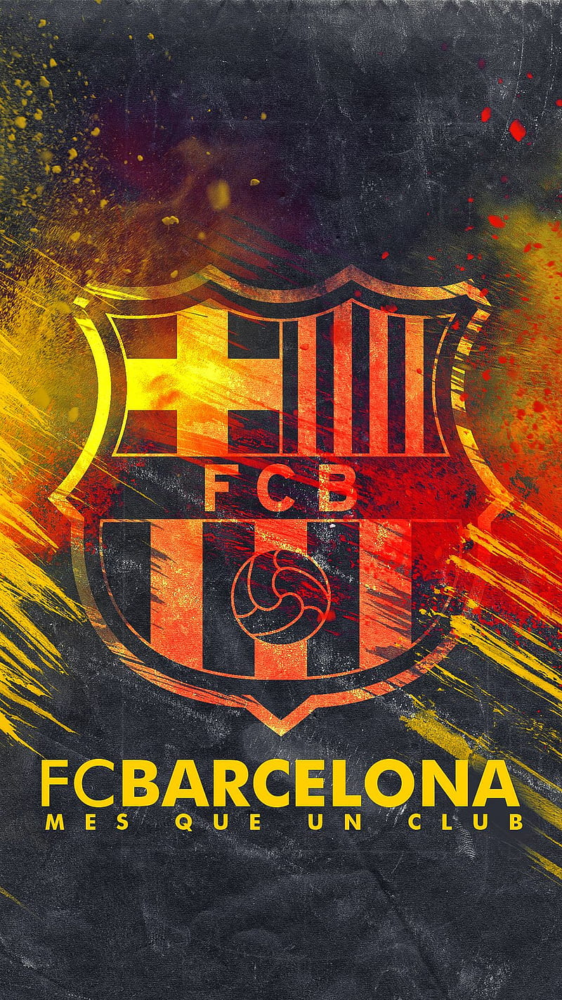

¡Visca el Barça!
El Fútbol Club Barcelona, fundado en 1899, es uno de los clubes más grandes y exitosos del mundo. Su lema "Més que un club" representa su profunda conexión con Cataluña y sus valores deportivos.
Línea de Tiempo Histórica
- 1899: Fundación del club por Joan Gamper.
- 1929: Ganador del primer campeonato de liga español.
- 1974: Llegada de Johan Cruyff como jugador.
- 1992: Primer título de Champions League.
- 2009: Sextete bajo Pep Guardiola.
- 2015: Segunda vez campeones del triplete.
🏆 Palmarés del FC Barcelona
- Liga Española: 27 títulos
- Copa del Rey: 31 títulos
- Supercopa de España: 15 títulos
- UEFA Champions League: 5 títulos
- Mundial de Clubes FIFA: 3 títulos
- Supercopa de Europa: 5 títulos
- Recopa de Europa: 4 títulos
- Recopa de Europa: 4 títulos
- Copa de Ferias: 3 títulos
- Copa Eva Duarte: 3 títulos
- Copa de la Liga: 2 títulos
🏆 Balones de Oro Ganados por Jugadores del FC Barcelona
- 1960: Luis Suárez Miramontes
- 1973 & 1974: Johan Cruyff
- 1994: Hristo Stoichkov
- 1999: Rivaldo
- 2005: Ronaldinho
- 2009: Lionel Messi
- 2010: Lionel Messi
- 2011: Lionel Messi
- 2012: Lionel Messi
- 2015: Lionel Messi
- 2019: Lionel Messi
- 2021: Lionel Messi
Total: 12 Balones de Oro ganados por jugadores mientras jugaban en el Barça.